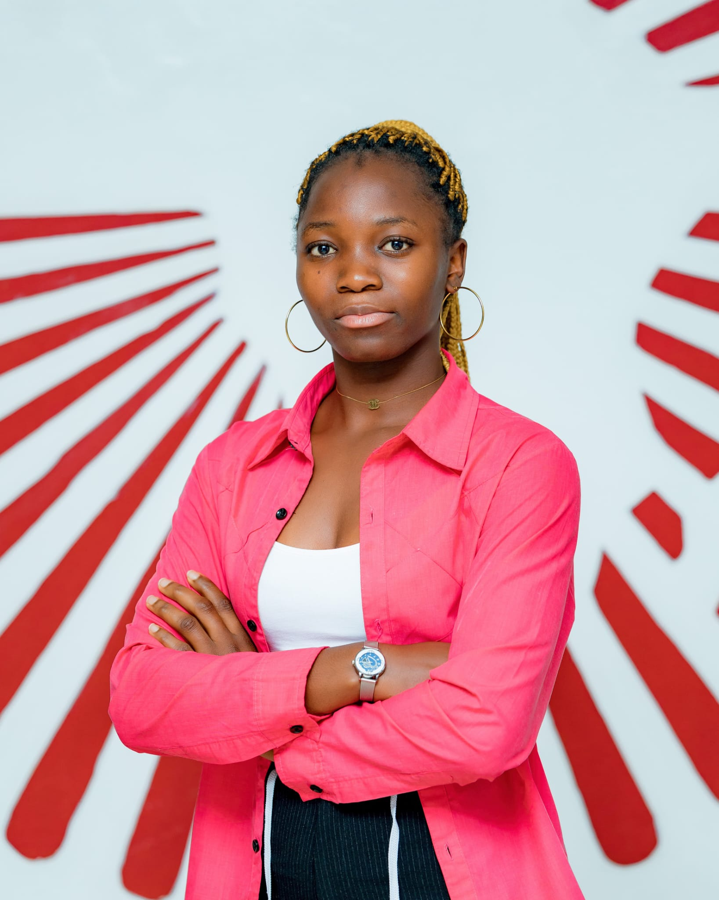

Private Tutor in Mathematics
Provided mathematics tutoring to high-school and university students, supporting students in understanding mathematical concepts and solving problems.
PhD Student in Applied Mathematics
PhD student in Applied Mathematics at the Technical University of Freiberg (TUBAF), Germany, with a research focus on Partial Differential Equations and mathematical modeling.

I am a positive thinker and proactive problem solver with strong analytical skills and a passion for Applied Mathematics, particularly Partial Differential Equations. I am adaptable to changing environments, thrive under pressure, and remain focused on achieving my goals. I enjoy working in collaborative environments and contributing to mathematical research and interdisciplinary projects.
My research interests are centered on Applied Mathematics, Partial Differential Equations, mathematical modeling, and interdisciplinary applications of mathematical methods.
Mathematical modeling project investigating disease dynamics using delay differential equations.
Mathematical modeling project studying the dynamics of bean anthracnose using a compartmental modeling approach and considering the influence of climate change.
Provided mathematics tutoring to high-school and university students, supporting students in understanding mathematical concepts and solving problems.
Collaborated with a team to maintain farm productivity and contribute to agricultural activities supporting families.
Managed household responsibilities including cleaning, cooking, and childcare.
PhD in Applied Mathematics, with a research focus on Evolutionary Equations.
Research Visit in Applied Mathematics.
Structure Master's in Mathematical Sciences.
Master's Degree in Applied Mathematics.
Bachelor's Degree in Applied Mathematics.
Scholarship
Scholarship